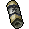

忍术卷轴

Naruto Story 的 HEAVEN SCROLL（天之卷轴），用于本游戏技能拾取。
来源页面 · 原图以下图片与游戏使用的是同一份文件。道具保留原图像素与透明背景；螺旋丸帧从现有游戏图集裁切，没有重新绘制。

Naruto Story 的 HEAVEN SCROLL（天之卷轴），用于本游戏技能拾取。
来源页面 · 原图Naruto Story 明确标注为 MILITARY RATIONS PILL 的物品图；纸包中的黑色丸药。
来源页面 · 原图来自 Nintendo DS《Naruto Shippuden: Shinobi Rumble》，图集提取者 Neimad。使用图集中“SPECIAL MOVE 1 (WEAK): RASENGAN”的两个独立球体帧。只去除图集底色并裁切、对齐，保持原像素比例。
当前普通螺旋丸使用 WEAK 行球体帧，大玉使用原图集明确标注的 STRONG: OODAMA RASENGAN 行球体帧。两者均固定播放一秒，仅做轻微淡入、淡出，不再混合爆散与蓄势帧；不是原作完整的角色出招动画。
大玉原始球体帧：